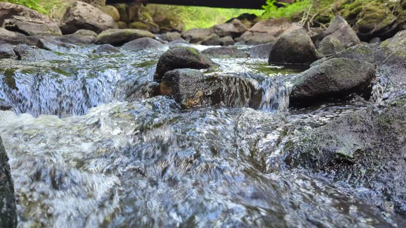

Platsen
Landa · Mötas · Fira
Skutesjön ligger mitt i skogen. Granarna står tätt, marken är mjuk av mossa och stigarna slingrar sig under trädkronorna mellan husen och basturna, ut till gläntorna där eldplatserna ligger. Här och var öppnar sig skogen mot sjön, och en å rinner genom marken året om.
Hit kommer människor för att landa. För retreat, yoga, kurser och för att fira – och för ceremonier: kakaoceremonier hålls här ofta, liksom eldceremonier och svetthydda. Vi har byggt platsen med omsorg om det enkla: rent trä, sten, eld och rymd – så att det som händer här får ta plats.
Healingcenter · Nordisk natur
Där skogen
möter vattnet
Hyr hela Skutesjön för retreat, kurs, ceremoni eller firande. Två bastur, eldplatser under öppen himmel, ett gemenskapshus med kök och yogasal och ett eget sovhus för fyrtio gäster – mitt i skogen.
Gå runt på Skutesjön
Mått avlästa från ritningar och kan avvika något. Färger och material är antagna.Öppna i helskärm →
Faciliteter
Allt som behövs.
Inget som stör.
Platsen är utformad för grupper som vill vara nära varandra och nära naturen – med bekvämlighet nog att stanna länge.
-
Vatten
Två bastur & badplats
Två bastur – en vedeldad och en eluppvärmd – och bad i sjön från badplatsen. Året om, för morgonbad i sommarljus såväl som vinterdopp i is.

-
Spa
Behandlingsrum & aufguss
Ett spaliknande utrymme med massagebänk, som öppnar för behandlingar, kroppsterapi och spa-events i anslutning till basturna. Ibland hålls aufguss – bastuceremoni med doft, värme och rörelse.
-
Gemenskapshuset
Stort kök & luftig yogasal
Det stora gemenskapshuset rymmer ett rejält kök för matlagning till hela gruppen och en ljus, luftig yogasal – för rörelse, ceremoni, undervisning och samtal.
-
Sovhuset
Sovplatser för 40 gäster
Ett separat sovhus med plats för cirka fyrtio personer i flerbäddsrum, avskilt från gemenskapshuset så att vila och aktivitet inte konkurrerar. Separat logi för kvinnor och män när så önskas och i den mån det går.
-
Eld
Flera eldplatser
Flera eldplatser spridda över marken, vid vattnet och i skogsbrynet – för samtal, ceremoni och kvällar under stjärnorna. Ved finns alltid.

-
Sommar
Tipi med eldstad
Under sommaren står en stor tipi på ängen, med eldplats inne i mitten. Här kan du elda, samlas i cirkel, hålla ceremoni, musik eller samtal – vad du vill, oavsett väder.

-
Mark
Rinnande vatten & stigar
En å rinner genom området och stigar binder samman alla delar. Naturen är närvarande i varje steg.

Om oss
Medkänsla och kärlek
som utgångspunkt
Skutesjön drivs av en organisation med intentionen att inspirera till medkänsla och kärlek. Vår vision är att vara värd för evenemang där alla kan ta del av livets visdom, upplyftande musik och jordens kulturer.
Hyra platsen
Du skapar innehållet.
Vi håller platsen.
Vi hyr ut hela Skutesjön till dig som vill skapa något eget – retreat, kurs, ceremoni, firande eller festival. Du kommer med din grupp och din idé. Vi ser till att allt runtomkring fungerar.
Det ingår
Boende
Sovhuset med plats för cirka 40 gäster i flerbäddsrum, avskilt från de gemensamma ytorna. Enkelrum i mån av plats mot tillägg.
Gemenskapshuset
Stort kök för matlagning till hela gruppen och en ljus, luftig yogasal för rörelse, ceremoni och samtal.
Vatten & eld
Två bastur – en vedeldad och en eldriven – ett spaliknande behandlingsrum med massagebänk, badplats i sjön, flera eldplatser med ved, och sommartid en stor tipi med eldstad.
Passar för
- Retreat & yoga
- Ceremonier, kakao & cirklar
- Kurser & utbildningar
- Bröllop & firanden
- Spa, bastu & aufguss
- Företagsretreat
Hyr platsen för en kväll, en dag, en helg eller en hel vecka – vi formar upplägget efter ert event.
Frågor & svar
Vad behöver du veta
för att säga ja?
Raka svar för dig som ska ansvara för en grupp. Markera det du vill veta mer om, så följer frågan med i ditt mejl.
Var sover alla?
- I sovhuset, en egen byggnad med plats för ca 40 gäster i flerbäddsrum.
- Separat logi för kvinnor och män om ni önskar, i mån av plats.
- Enkelrum finns i vissa fall, mot tillägg.
- Övernattning före och efter ert event kan bokas.
Hur blir det med maten?
- Gemenskapshuset har ett stort kök där ni kan laga mat till hela gruppen.
- Maten vi serverar är i största möjliga mån ekologisk, vegetarisk och vegansk, närproducerad och närodlad.
- Måltiderna äts tillsammans. Berätta i mejlet om ni vill laga själva eller ha mat serverad.
Hur tar sig gruppen hit?
- Tåg eller buss till Kinna. Därifrån hjälper vi till att samordna hämtning för grupper.
- Med bil: parkering vid infarten. Sista biten är grusväg.
- Adress: Skutesjövägen 27, 511 92 Örby.
Vad gör vi om det regnar?
- Gemenskapshuset har en ljus, luftig yogasal och ett stort kök där hela gruppen kan samlas.
- Två bastur och ett spaliknande behandlingsrum med massagebänk.
- Sommartid står en stor tipi med eldstad i mitten.
Får vi elda och basta?
- Ja. Det finns flera eldplatser och ved finns alltid.
- Två bastur: en vedeldad och en eldriven. Ibland hålls aufguss.
- Badplats i sjön, året om.
Vad behöver deltagarna ta med?
- Egna sängkläder och handduk. Det går att hyra om någon inte har med sig.
- Kläder för skog och väder. Stigar binder ihop husen, skogen och sjön.
Hur trygg är miljön?
- Sammankomsterna är alkohol- och drogfria.
- Vi vill främja gemenskaper som är trygga för alla, med respekt, omtanke och nyfikenhet.
- Värdarna bor här året runt och finns på plats under er vistelse.
Vad kostar det?
- Pris efter upplägg. Det beror på hur många ni är, hur länge ni stannar och vad ni vill ha med.
- Skriv några rader om er plan, så återkommer vi med förslag på upplägg och pris inom några dagar.
Kom hit för några dagar.
Ta med dig stillheten hem.
Kontakt
Skicka ett mejl.
Det behöver inte vara färdigt. Svara på tre frågor så skriver vi mejlet åt dig. Vi återkommer inom några dagar med förslag på upplägg och pris.
- Till
- greetskutesjon@gmail.com
- Ämne
- Förfrågan – hyra Skutesjön
Öppnas inget mejlprogram? Kopiera texten och klistra in den i ett nytt mejl.
Nyhetsbrev
Det som inte alltid
delas öppet
Retreats, mindre sammankomster, lediga perioder och förhandsbesked om Yggdrasil – en del av det som händer vid Skutesjön går bara ut till dem som står på listan.
Hitta hit
Vägen till Skutesjön
Platsen ligger avskilt men är lätt att nå. Skicka gärna er ankomsttid så möter vi upp vid vägen.
- Adress
- Skutesjövägen 27, 511 92 Örby
- Med bil
- Parkering finns vid infarten. Sista biten är grusväg.
- Kollektivt
- Närmaste station och busshållplats är Kinna. Vi hjälper till att samordna hämtning för grupper.
- Kontakt
- greetskutesjon@gmail.com